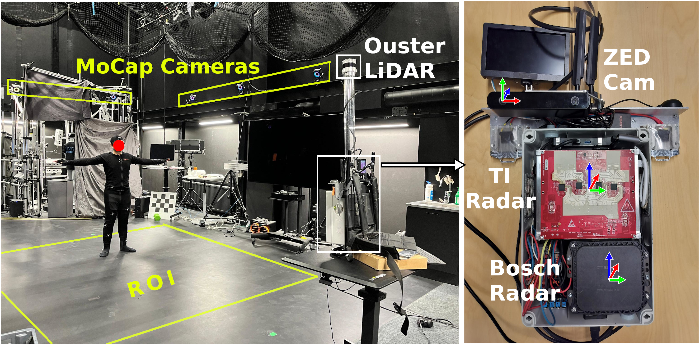
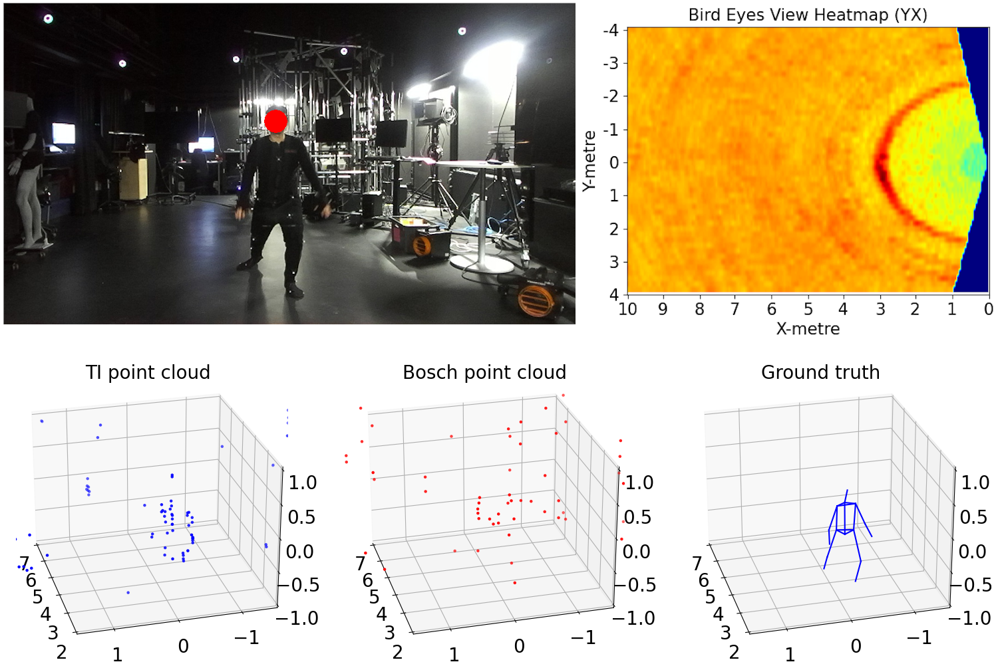
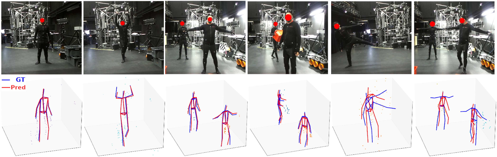
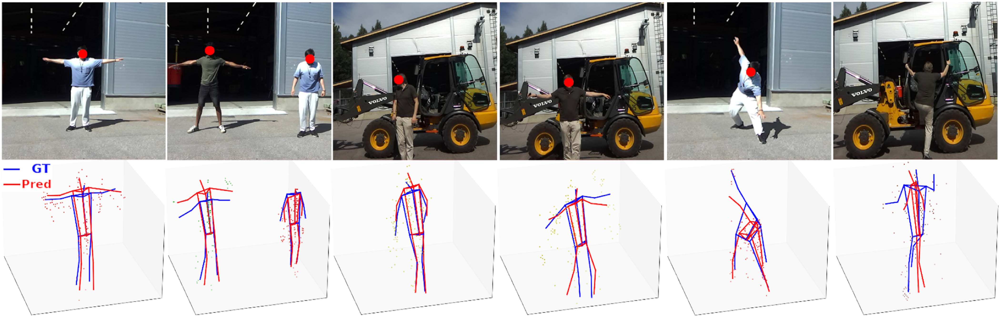

Experimental setup showing the indoor environment, motion-capture space, and the multi-sensor rig with TI radar, Bosch radar, LiDAR, and stereo camera.
This work focuses on 3D Human Pose Estimation (HPE) using imaging radar. We introduce DualRadarHPE, a new multi-sensor dataset containing calibrated and temporally aligned data from two widely adopted radar sensors - Texas Instruments (TI) and Bosch. The dataset includes three radar data representations from TI: raw ADC data, heatmap, and point-cloud; and point clouds from Bosch. The data was captured in both indoor and outdoor scenarios. These scenarios were designed to reflect challenges of real-world applications, such as presence of large metallic objects that can increase radar sensor noise, sensor motion, and multiple people in the scene.
We overview state-of-the-art open-access datasets and benchmarks for radar-based 3D HPE and evaluate two popular point-cloud-based methods and the most recent heatmap-based method. We introduce necessary algorithmic adaptations to improve their performance. Finally, we propose a new RadarViT method that is more light-weight and outperforms the existing methods with respect to the mean per joint position error. We tested this model in outdoor conditions with and without re-training, in the presence of multiple persons, and under dynamic conditions. The dataset and the code will be made publicly available.
| Sequences | 40 |
|---|---|
| Individuals | 5 |
| Actor configuration | 29 single-person sequences, 11 two-person sequences |
| Environment | 33 indoor sequences, 7 outdoor sequences |
| Static sensor | 35 sequences |
| Sensor in motion | 5 sequences, trajectories of the motion |
| TI radar | Raw ADC, 4D heatmaps, and point-cloud; 52,475 frames in total |
| Bosch radar | Point clouds in ROS2 bag format |
| Camera | ZED 2i stereo image pairs, 1024 × 576, in ROS2 bag format |
| Motion-capture | OptiTrack actor joint positions in CSV format |
| LiDAR | Ouster OS0 point clouds in ROS2 bag format |

Experimental setup showing the indoor environment, motion-capture space, and the multi-sensor rig with TI radar, Bosch radar, LiDAR, and stereo camera.

Example synchronized data from the dataset, including RGB view, heatmap, TI point cloud, Bosch point cloud, and 3D ground truth.

Indoor qualitative results from the paper with RGB observations and predicted versus ground-truth skeletons.

Outdoor qualitative results from the paper showing performance in more challenging industrial scenes.
@ARTICLE{11602699,
author={Nguyen, Trung and Rai, Prashant Kumar and Serbenyuk, Nikolay and Ghabcheloo, Reza and Strokina, Nataliya},
journal={IEEE Open Journal of Signal Processing},
title={A Multi-Sensor Dataset for 3D Human Pose Estimation Using Imaging Radar},
year={2026},
volume={7},
number={},
pages={753-765},
keywords={Radar;Image sensors;Clouds;Titanium;Modeling;Pose estimation;Joints;Sequences;Sequential analysis;Distance measurement;Imaging radar;human pose estimation;multimodal dataset;sensor array and multichannel processing;deep learning;benchmarking},
doi={10.1109/OJSP.2026.3711537}}